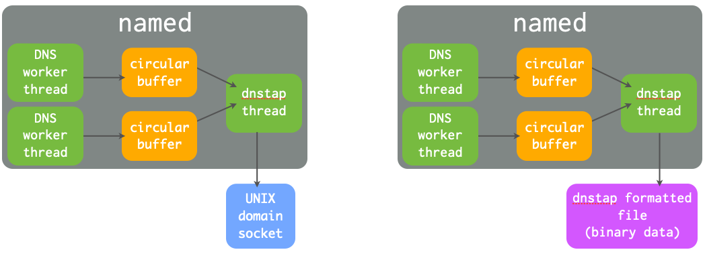
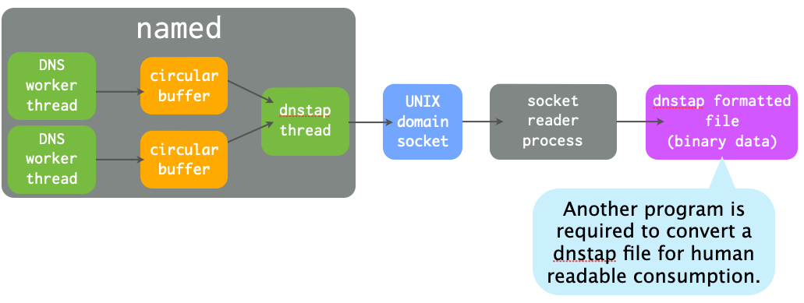

DNS & BIND 9 Leap-Ahead Online Training
1 Course Notes and exercises
This page contains the course notes and exercise instructions for attendees of the online training DNS & BIND Leap-Ahead.
Alternative location for this website: https://cstrotm.github.io/dns-leap-ahead-training-page.github.io/
Click on images to zoom in.
1.1 Introduction
- What is your interest in DNS?
- What is your prior knowledge of DNS?
- What do you want to learn about DNS?
1.2 Virtual machines for this lab
- User :
user - Password:
DNSandBIND - Root-Shell via
sudo -s
1.3 Access to the lab machines
- Each student has three lab machines for the DNS Leap Ahead
training course
- A DNS resolver:
dnsrNN.dnslab.org(New York, US) - A primary authoritative DNS:
nsNNa.dnslab.org(Toronto, CA) - A secondary authoritative DNS:
nsNNb.dnslab.org(London, UK)
- A DNS resolver:
- During the training course labs, replace
NNwith your student number
| NN | Name | URL for Web-based Terminal | SSH Access | Zone |
|---|---|---|---|---|
| 01 | Matej Ćosić | https://dnsr01.dnslab.org | ssh user@dnsr01.dnslab.org | zone01.dnslab.org |
| 02 | Darren Ankney | https://dnsr02.dnslab.org | ssh user@dnsr02.dnslab.org | zone02.dnslab.org |
| 03 | Evron Folkes | https://dnsr03.dnslab.org | ssh user@dnsr03.dnslab.org | zone03.dnslab.org |
| 04 | Zoltan Gegeny | https://dnsr04.dnslab.org | ssh user@dnsr04.dnslab.org | zone04.dnslab.org |
| 05 | (free) | https://dnsr05.dnslab.org | ssh user@dnsr05.dnslab.org | zone05.dnslab.org |
| 06 | (free) | https://dnsr06.dnslab.org | ssh user@dnsr06.dnslab.org | zone06.dnslab.org |
| 07 | Carsten Strotmann(Trainer) | -- | -- | -- |
2 New terminology used in DNS & BIND
- The terms
masterandslavehave been used to describe primary and secondary authoritative DNS servers in the past.- However this terminology is wrong and misleading, for the reasons discussed in the Internet Draft Terminology, Power, and Inclusive Language in Internet-Drafts and RFCs: https://tools.ietf.org/html/draft-knodel-terminology
- In this document, and in configuration examples, we are using the
new terms
primary(instead ofmaster) andsecondary(instead ofslave) whenever possible. - BIND 9 has stared adopting the new terms with BIND 9.14, however
the transition is not completed and some terms in configuration
statements are still using the old terms. This will change with
future releases
- If you use an older version of BIND 9, please substitute the new terms for the older ones
- The old terminology will also be found in older books and standards documents (RFCs and Internet Drafts)
- DNS terminology can be confusing and is sometimes overloaded. RFC 9499 DNS terminology ( https://tools.ietf.org/html/rfc9499 ) tries to collect and document the current usage of DNS terminology.
3 Building the authoritative DNS server
- Repeat the steps for the next chapter on the
nsNNaandnsNNbvirtual machines (primary and secondary authoritative server)
3.1 Enable ISC BIND 9 repository for Enterprise Linux 9
- Add the ISC BIND 9 repository to the packet-manager repository list
% dnf copr enable isc/bind
- Install the EPEL (Extra Packages for Enterprise Linux) repository (required for additional dependencies needed for BIND 9.20)
% dnf install epel-release
3.2 Installing BIND 9.20
- Install BIND 9.20 from the ISC repositories
% dnf install isc-bind
- ISC and EPEL signing keys
Importing GPG key 0xC35B531D: Userid : "isc_bind (None) <isc#bind@copr.fedorahosted.org>" Fingerprint: 490C 4AE6 3D8A 6B24 A641 2C8D ED4A 0B1B C35B 531D From : https://download.copr.fedorainfracloud.org/results/isc/bind/pubkey.gpg Importing GPG key 0x3228467C: Userid : "Fedora (epel9) <epel@fedoraproject.org>" Fingerprint: FF8A D134 4597 106E CE81 3B91 8A38 72BF 3228 467C From : /etc/pki/rpm-gpg/RPM-GPG-KEY-EPEL-9
- Quick reference for the
nameddaemon:- The configuration file can be found at:
/etc/opt/isc/scls/isc-bind/named.conf - Command line options for the daemon can be specified in:
/etc/opt/isc/scls/isc-bind/sysconfig/named
- The configuration file can be found at:
- Note that due to the nature of Software Collections, no BIND 9
daemon or utility installed by these packages is available in $PATH
by default. To be able to use them, do the following:
- to enable the Software Collection for the current shell, run
scl enable isc-bind bash - to enable the Software Collection inside a shell script, add the
following line to it:
source scl_source enable isc-bind
- to enable the Software Collection for the current shell, run
% source scl_source enable isc-bind % which named /opt/isc/isc-bind/root/usr/sbin/named
- Add BIND 9 SCL path to bash shell startup
% echo "source scl_source enable isc-bind" >> .bashrc
- Link the ISC BIND configuration file directory into the
/etcdirectory (for easy access)
% ln -s /etc/opt/isc/scls/isc-bind /etc
- Enable and start BIND 9
% systemctl enable --now isc-bind-named
- Check that BIND 9 is running without errors
% rndc status % systemctl status isc-bind-named
3.2.1 A configuration file for an authoritative BIND 9 server
- Let's tweak the configuration file
/etc/isc-bind/named.conffor an authoritative-only DNS server
options {
directory "/var/named";
listen-on { any; };
listen-on-v6 { any; };
dnssec-validation no;
recursion no;
minimal-responses yes;
minimal-any yes;
querylog no;
max-udp-size 1232;
edns-udp-size 1232;
zone-statistics yes;
};
- Logging for the authoritative server
logging {
channel default_syslog {
// Send most of the named messages to syslog.
syslog local2;
severity debug;
};
channel xfer {
file "transfer.log" versions 10 size 10M;
print-time yes;
};
channel update {
file "update.log" versions 10 size 10M;
print-time yes;
};
channel named {
file "named.log" versions 10 size 20M;
print-time yes;
print-category yes;
};
channel security {
file "security.log" versions 10 size 20M;
print-time yes;
};
channel dnssec {
file "dnssec.log" versions 10 size 20M;
print-time yes;
};
channel ratelimit {
file "ratelimit.log" versions 10 size 20M;
print-time yes;
};
channel query_log {
file "query.log" versions 10 size 20M;
severity debug;
print-time yes;
};
channel query-error {
file "query-errors.log" versions 10 size 20M;
severity info;
print-time yes;
};
category default { default_syslog; named; };
category general { default_syslog; named; };
category security { security; };
category queries { query_log; };
category dnssec { dnssec; };
category edns-disabled { default_syslog; };
category config { default_syslog; named; };
category xfer-in { default_syslog; xfer; };
category xfer-out { default_syslog; xfer; };
category notify { default_syslog; xfer; };
category client { default_syslog; named; };
category network { default_syslog; named; };
category rate-limit { ratelimit; };
category update { update; };
};
- Test the configuration
% named-checkconf
- Reload the BIND 9 configuration
% rndc reconfig
- The last two commands might fail. Why? What can you do to fix the issue?
- Open port 53 (DNS) in the firewall
% firewall-cmd --permanent --zone=public --add-service=dns % firewall-cmd --reload
- Test if you can reach your new authoritative server from the DNS resolver
- from the resolver machine (
NN= your number)
- from the resolver machine (
$ dig @nsNNa.dnslab.org ch TXT version.bind
3.3 Solution "Building an authoritative DNS Server":
- Issue: The
/var/nameddirectory is missing and needs to be owned by thenameduser. - Create the
/var/nameddirectory
% mkdir /var/named
- Adjust the permissions on the BIND 9 home directory
% chown named: /var/named
- The BIND 9 process should now successfully load the new configuration
% rndc reconfig
3.4 Create a primary zone
- Work on the primary DNS server
nsNNa - Goal: a working primary zone for this training lab environment
- The trainer will publish the solution after some time into the exercise, but first try to create the configuration without outside help
3.4.1 A zone file
- Create a new zone file for the zone
zoneNN.dnslab.orgin the BIND 9 home directory/var/named - The zone records should have a TTL of 60 seconds (not recommended for production, but required for the course labs)
- The zone should contain: 1 x SOA, 2 x NS records (for
nsNNaandnsNNb) - One A record for the name
primary.zoneNN.dnslab.org(IPv4 ofnsNNa) - One AAAA record for the name
primary.zoneNN.dnslab.org(IPv6 ofnsNNa) - One A record for the name
secondary.zoneNN.dnslab.org(IPv4 ofnsNNb) - One AAAA record for the name
secondary.zoneNN.dnslab.org(IPv6 ofnsNNb) - A TXT record with the owner-name of
textand a text of your choice - Two MX records for
primaryandsecondarywith different preference values - Check the syntax of your zone-file with
named-checkzone
3.4.2 Register the zone in the BIND 9 configuration
- Create a zone block in
named.conffor a primary zone for the zone created in the last chapter - Test the configuration with
named-checkconf -z - Reload the BIND 9 configuration
- Verify that
nsNNa.dnslab.organswers authoritatively for this zone (AA-Flag!)
3.4.3 Solution for primary zone
- The Zonefile (your zone will have different IPv4 and IPv6 addresses)
$TTL 60
@ IN SOA nsNNa.dnslab.org. hostmaster.zoneNN.dnslab.org. 1001 1h 30m 41d 30
IN NS nsNNa.dnslab.org.
IN NS nsNNb.dnslab.org.
IN MX 10 primary
IN MX 20 secondary
primary IN A 192.0.2.53
IN AAAA 2001:db8:100::53
secondary IN A 192.0.2.153
IN AAAA 2001:db8:200::53
text IN TXT "DNS Leap Ahead!"
- The primary zone configuration on
nsNNa
zone "zoneNN.dnslab.org" {
type primary;
file "zoneNN.dnslab.org";
};
3.5 Register the zone on a secondary server
- Work on the secondary DNS server
nsNNb - Goal: a working secondary zone for this course
- The trainer will publish the solution after some time into the exercise, but first try to create the configuration without outside help
- Create a zone block in
named.confon the secondary server to load the zonezoneNN.dnslab.orgfrom the primary server via zone transfer - Check the configuration with
named-checkconf -z - Reload the BIND 9 configuration
- Check the log files for errors
- Check the file
transfer.logfor successful transfer of the zone- The transfer fails – why? How to solve this issue?
- Verify that
nsNNb.dnslab.organswers authoritatively for this zone (AA-Flag!) - Verify the delegation of your DNS servers with
dig zoneNN.dnslab.org +nssearch
3.5.1 Solution for secondary zone
- Starting with BIND 9.20.0, outgoing zone transfers are no longer
enabled by default. An explicit
allow-transfer ACLmust now be set at the zone, view, or options level to enable outgoing transfers.- Here we use a simple "allow all" ACL (restoring the old, pre-BIND-9.20 behavior. We will learn later in the course how to secure zone transfer with cryptographic keys (TSIG).
- The primary zone on
nsNNa
zone "zoneNN.dnslab.org" {
type primary;
file "zoneNN.dnslab.org";
allow-transfer { any; };
};
- The secondary zone on
nsNNb
zone "zoneNN.dnslab.org" {
type secondary;
primaries { <ipv6-address-of-primary>; <ipv4-address-of-primary>; };
file "zoneNN.dnslab.org";
};
4 A quick look at DNSSEC
4.1 DNS Security (or lack of)
- the classic DNS from 1983 has not been designed with security in mind
- Attack vector: DNS cache poisoning
- Attack vector: Men-in-the-Middle data spoofing
- Attack vector: changes to the client DNS resolver configuration
- Attacks of authoritative DNS servers
- DNSSEC can help
4.2 DNSSEC
- the DNS security extension DNSSEC secures DNS data by augmenting
the data with cryptographic signatures
- the owner (administrator) creates a pair of private and public keys for each DNS zone (asymmetric crypto)
- the owner/administrator signs all DNS data with the private/secret key
- the recipient of the data (DNS resolver or client operating
system or application) will verify (validate) the data
- that the data has not been changed on the server nor during transit
- that the data comes from the owner (the owner of the private key)
4.3 The chain of trust in DNS
- DNSSEC creates a chain of trust between the parent zone and the child zone
- Applications and DNS resolvers can follow the chain of trust to a configured trust anchor to validate the DNS data
- We will look into DNSSEC in more details later in this course
5 DNSSEC in a nutshell
- In DNSSEC, each zone has one or more key pairs.
- The private key of each pair
- Is stored securely (probably on a hidden primary)
- Is used to sign zone data
- Should never be stored in a RR
- The public key of each pair
- Is stored in the zone data, as a DNSKEY record
- Is used to verify zone data
- The private key of each pair
- A private key signs the hashes of each RRSet in a zone.
- The public key is accessible through a standard RR.
- Recursive servers or clients query for the public key RR in order to verify a hash.
- The RR is known as the DNSKEY and covered below.
5.1 DNSSEC key algorithms
| Algorithm | No. | Note |
|---|---|---|
| RSAMD5 | 1 | deprecated, not implemented |
| 5 | not recommended, implemented (removed in ) | |
| RSASHA256 | 8 | recommended |
| RSASHA512 | 10 | large keys |
| 3 | slow validation, no extra security (removed in ) | |
| 12 | removed in BIND 9.18 | |
| ECDSA | 13/14 | small signatures, read ECDSA and DNSSEC: http://blog.apnic.net/2014/10/23/ecdsa-and-dnssec/ |
| ED448/ED25519 | 16/15 | new, not widely supported RFC 8080 / RFC 8032 Edwards-Curve Digital Signature Algorithm (EdDSA) |
5.2 DNSSEC records
5.2.1 RRSIG
- The RRSIG records holds the cryptographic signature over the DNS data. The first field of the RRSIG holds the type this RRSIG is for. Together with the domain name of the RRSIG this data is important to match the signature to the data record.
- A zone's private key signs the RRSets in the zone.
- The signatures are added to the zone as RRSIG RRs.
- If two key pairs are in use, each RRSet is signed twice, and there is double the number of signatures.
- Signatures have start and expiration times (typically a month or more apart).
- They must be replaced before expiring. BIND 9 can automate the signature updates.
- Keys don't have expiration timers.
- Work on the DNS resolver machine
- Ask for the DNSSEC signature of
dnssec.works NS:
$ dig dnssec.works NS +dnssec +multi
- Answer these questions into the chat
- Which algorithm is this zone using? check the number against IANA Domain Name System Security (DNSSEC) Algorithm Numbers
- When does the signature expire?
- When did the signature become valid?
5.2.2 DNSKEY
- The public key of a DNSSEC key pair is stored in an DNSKEY RR.
- The private key is not publicly available or accessible through DNS.
- DNSKEY RRs are stored in the zone they can verify.
- This conveniently means the zone administrator can sign all the RRSets and create the DNSKEY RRSet.
- Work on the DNS resolver machine
- Ask for the DNSSEC keys of
dnsworkshop.cz:
$ dig dnsworkshop.cz DNSKEY +dnssec +multi
- Answer these questions into the chat
- Which algorithm is this zone using?
- Compare the size of keys and signature with the zone
dnssec.works - Write in the chat the sizes of both DNS answer messages as
reported by
dig
5.2.3 DS Record
- The Delegation Signer (DS) records holds the hash of the
Key-Signing-Key of a DNSSEC signed child zone.
- It is used to verify that the KSK has not been replaced without permission
- The DS record is usually submitted to the parent zone operator
via a web-based or API system implemented by the domain reseller
(registrar)
- This interface can become a target for attacker that want to change data in a DNSSEC signed zone and should be protected (two factor signon, registry lock etc).
- Work on the DNS resolver machine
- Ask for the DNSSEC delegation signer of
isc.org:
$ dig isc.org DS +dnssec +multi
- Answer these questions into the chat
- Which algorithm is this zone using?
- What is the current key-id of the KSK in the zone
isc.org? - What hashing algorithm is used for the DS record of
isc.orgcheck against Delegation Signer (DS) Resource Record (RR) Type Digest Algorithms?
6 DNSSEC signing and validation
7 DNSSEC validation (simplified)
- When the validator gets an RRSIG in a response, it needs the DNSKEY, and DS RR to authenticate.
- If validation fails, the signed RRs are discarded, and SERVFAIL error is returned to the client.
- If no appropriate trust anchor exists, the RRSIG is ignored.
- If the chain of trust is broken the signature is ignored.
- The steps in the following animation are simplified.
- It only shows validation using one key per zone (SSK/CSK).
- Commonly, a zone has ZSK & KSK, so there are additional steps.
8 Building a validating DNS Resolver
- Work in the DNS resolver VM
dnsrNN.dnslab.org
8.1 Enable ISC BIND 9 repository for Enterprise Linux 9
- Add the ISC BIND 9 repository to the packet-manager repository list
% dnf copr enable isc/bind
- Install the EPEL (Extra Packages for Enterprise Linux) repository (required for additional dependencies needed for BIND 9.20)
% dnf install epel-release
8.2 Installing BIND 9.20
- Install BIND 9.20 from the ISC repositories
% dnf install isc-bind
- ISC and EPEL signing keys
Importing GPG key 0xC35B531D: Userid : "isc_bind (None) <isc#bind@copr.fedorahosted.org>" Fingerprint: 490C 4AE6 3D8A 6B24 A641 2C8D ED4A 0B1B C35B 531D From : https://download.copr.fedorainfracloud.org/results/isc/bind/pubkey.gpg Importing GPG key 0x3228467C: Userid : "Fedora (epel9) <epel@fedoraproject.org>" Fingerprint: FF8A D134 4597 106E CE81 3B91 8A38 72BF 3228 467C From : /etc/pki/rpm-gpg/RPM-GPG-KEY-EPEL-9
- Quick reference for the
nameddaemon:- The configuration file can be found at:
/etc/opt/isc/scls/isc-bind/named.conf - Command line options for the daemon can be specified in:
/etc/opt/isc/scls/isc-bind/sysconfig/named
- The configuration file can be found at:
- Note that due to the nature of Software Collections, no BIND 9
daemon or utility installed by these packages is available in $PATH
by default. To be able to use them, do the following:
- to enable the Software Collection for the current shell, run
scl enable isc-bind bash - to enable the Software Collection inside a shell script, add the
following line to it:
source scl_source enable isc-bind
- to enable the Software Collection for the current shell, run
% source scl_source enable isc-bind % which named /opt/isc/isc-bind/root/usr/sbin/named
- Add BIND 9 SCL path to bash shell startup
% echo "source scl_source enable isc-bind" >> .bashrc
- Link the ISC BIND configuration file directory into the
/etcdirectory (for easy access)
% ln -s /etc/opt/isc/scls/isc-bind /etc
- Enable and start BIND 9
% systemctl enable --now isc-bind-named
- Check that BIND 9 is running without errors
% rndc status % systemctl status isc-bind-named
- Check if our BIND 9 works as a DNS resolver
$ dig @localhost google.com
- Repeat the last query again
- Please send the answer to this question to the chat:
- What is the answer time for the 1st request?
- What is the answer time for the 2nd request?
- Guess what causes the difference?
8.3 Optimizations to the default configuration
- Use your virtual lab machine,
dnsrNN(DNS Resolver) - Let's tweak the configuration file
/etc/isc-bind/named.conffor a resolver DNS server - Add the following new lines in the
optionsblock in the/etc/isc-bind/named.conffile:
options {
[...]
server-id none;
version none;
hostname none;
recursive-clients 32768;
tcp-clients 1024;
max-clients-per-query 1024;
fetches-per-zone 2048;
fetches-per-server 4096;
edns-udp-size 1232;
max-udp-size 1232;
minimal-responses yes;
querylog no;
max-cache-size 2147483648;
};
- The values above are for an ISP level DNS resolver. They should work for a broad range of DNS resolver machines, from small to very large.
- The new configuration statements:
dnssec-validation auto;enables DNSSEC validation via the builtin trust anchor for the Internet Root-Zone. If DNSSEC is used in an closed private DNS system (not connected to the Internet), dedicated DNSSEC trust anchor must be configured. This setting is the default in- server-id none: disable returning the server's hostname on the
query
dig @ip-of-server ch TXT hostname.bind - version none: disable returning the BIND 9 version number on
the query
dig @ip-of-server ch TXT version.bind - recursive-clients: number of concurrent DNS queries over UDP that are allowed from clients
- tcp-clients: number of concurrent DNS queries over TCP that are allowed from clients
- max-clients-per-query 1024: rate-limiting - number of concurrent clients that can request the same query
- fetches-per-zone: rate-limiting - maximum number of concurrent DNS queries inside one zone
- fetches-per-server: rate-limiting - maximum number of concurrent DNS queries towards one authoritative DNS server
- edns-udp-size: maximum UDP answer size requested from authoritative servers
- max-udp-size: maximum UDP answer size when sending answers to clients
- minimal-responses yes: only fill the authority and additional sections when necessary by the DNS protocol
- querylog no: disable query logging on start/restart even if configured. Query logging slows down the DNS resolver
- max-cache-size 2147483648: use a maximum of 2GB for the DNS cache. A larger cache often has a negative impact on the DNS resolvers performance. If unsure, test with a performance benchmark.
- Check the configuration with
named-checkconfand reload the BIND 9 configuration withrndc reconfig - Make sure that the DNS resolver still does resolve DNS names in the Internet
9 EDNS - Response Size Limits in DNS
9.1 The early years - 512byte is enough
- The original DNS protocol had a size limit for DNS messages over UDP of 512 bytes
- The aim was to prevent fragmentation on the network path
- esp. in the early days of TCP/IP, fragmentation was slow
- The aim was to prevent fragmentation on the network path
9.2 RFC 1035
- RFC 1035 states in 2.3.4. Size limits:
UDP messages 512 octets or less
- and in section 4.2.1 UDP usage:
Messages carried by UDP are restricted to 512 bytes (not counting the IP or UDP headers). Longer messages are truncated and the TC bit is set in the header.
9.3 The 13 Root DNS Servers
- One artifact of the size limit of the original DNS protocol is the
number of authoritative DNS servers for the root zone in the
Internet (aka Root-Server)
- There are 13 logical Root-Servers (
a.root-servers.nettom.root-servers.net) - This is because without IPv6 and without the later EDNS0, 13 DNS names and IPv4 addresses fit nicely into the 512 byte limit
- There are 13 logical Root-Servers (
- The thirteen names
$ dig -4 @a.root-servers.net NS . +noedns +nodnssec ; <<>> DiG 9.16.7 <<>> -4 @a.root-servers.net ns . +noedns +nodnssec ; (1 server found) ;; global options: +cmd ;; Got answer: ;; ->>HEADER<<- opcode: QUERY, status: NOERROR, id: 19932 ;; flags: qr aa rd; QUERY: 1, ANSWER: 13, AUTHORITY: 0, ADDITIONAL: 15 [...] ;; ANSWER SECTION: . 518400 IN NS a.root-servers.net. . 518400 IN NS b.root-servers.net. . 518400 IN NS c.root-servers.net. . 518400 IN NS d.root-servers.net. . 518400 IN NS e.root-servers.net. . 518400 IN NS f.root-servers.net. . 518400 IN NS g.root-servers.net. . 518400 IN NS h.root-servers.net. . 518400 IN NS i.root-servers.net. . 518400 IN NS j.root-servers.net. . 518400 IN NS k.root-servers.net. . 518400 IN NS l.root-servers.net. . 518400 IN NS m.root-servers.net. [...] ;; Query time: 37 msec ;; SERVER: 198.41.0.4#53(198.41.0.4) ;; WHEN: Mon Oct 26 10:14:30 CET 2020 ;; MSG SIZE rcvd: 492
9.4 DNS over TCP
- When a DNS server needs to send a DNS response message larger than
the UDP size limit, it will send an incomplete response with the TC
"Truncated" flag set in the DNS header
- The DNS client (could be a DNS resolver), will detect the TC flag
and will repeat the query over TCP
- There is no size limit on DNS responses over TCP
- But TCP is not as fast as UDP, so this should be avoided
- The DNS client (could be a DNS resolver), will detect the TC flag
and will repeat the query over TCP
- Because the DNS protocol can switch from UDP to TCP on larger
responses (> 512 byte), DNS servers (authoritative as well as DNS
resolvers) should always support DNS over TCP
- And the firewall should allow DNS port 53 on UDP and TCP
$ dig -4 larger.dnssec.works TXT +noedns ;; Truncated, retrying in TCP mode. ; <<>> DiG 9.16.7 <<>> -4 larger.dnssec.works txt +noedns ;; global options: +cmd ;; Got answer: ;; ->>HEADER<<- opcode: QUERY, status: NOERROR, id: 64327 ;; flags: qr rd ra ad; QUERY: 1, ANSWER: 8, AUTHORITY: 0, ADDITIONAL: 0 [...]
9.5 New developments in DNS
- In the mid 1990ies, there was new development around the DNS protocol
- DNS security (DNSSEC)
- Cryptographic Signatures (TSIG and SIG(0))
- IPv6 Resource records
- DNS as a distribution channel for cryptographic keys for applications
- The 512byte limit was becoming a hindrance
9.6 EDNS0
- The IETF created an extension to DNS, called EDNS0
- RFC 2671 Extension Mechanisms for DNS (EDNS0) (1999-08) and RFC 6891 (2013-04)
- EDNS Version 0 (EDNS0) allows DNS messages sizes over UDP for up to 4096 bytes
9.7 ENDS0 features
- Besides lifting the limit on the maximum DNS response size, EDNS allows for additional DNS flags and payload:
9.8 EDNS1 (2,3,4 …)
- The current version of EDNS is version 0
- There had been discussions in the IETF on newer EDNS versions (such as EDNS1 https://datatracker.ietf.org/doc/draft-andrews-edns1/)
- But so far no new EDNS version has been standardized
10 DNS resolver best practices
10.1 Prevent DNS fragmentation
10.1.1 IPv6 and DNS fragmentation
- DNS originally had a 512B UDP payload limit.
- The limit was raised to 4096B with EDNS0, RFC 2671 Extension Mechanisms for DNS (EDNS0) (1999-08) and RFC 6891 (2013-04).
- IPv6 fragmentation is broken
- RFC 7872: Observations on the Dropping of Packets with IPv6 Extension Headers in the Real World
- IPv6 packets > 1280B may fragment. That effects DNS responses over UDP.
10.1.2 Cache Spoofing Attacks via DNS fragmentation
- Attacker can use DNS fragmentation to plant wrong information inside a DNS Resolver cache
- Without DNSSEC, all identify information is in the 1st fragment
- The attacker can spoof the 2nd fragment without anyone noticing
10.1.3 Preventing fragmentation
- Configure a maximum EDNS packet size of 1232 byte (1280 IPv6 MTU -
UDP header - IPv6 header)
- This also works for IPv4 over Ethernet
- This is the new default in DNS software (BIND 9, Unbound etc) since DNS Flag-Day 2020 (October 2020)
- Example for BIND 9
named.conf
options {
[...]
max-udp-size 1232;
edns-udp-size 1232;
};
- Important: a DNS Resolver with this setting must support
DNS-over-TCP (Port 53) to the Internet
- Make sure that outgoing connections on port 53/TCP (DNS) are not blocked
- Optional: to increase security, block all fragmented UDP traffic towards the DNS resolver in a firewall
10.2 minimal responses and minimal any
10.2.1 Minimal responses
- RFC 1034 defines the additional section in an DNS answer as
Carries RRs which may be helpful in using the RRs in the other sections.
- In the default configuration, BIND 9 tries to be very helpful, sending additional information …
- … creating larger than needed DNS answer packets
- This is sometimes exploited by attackers in distributed denial of
service attacks
- Configure "minimal-responses" in BIND 9
options {
[...]
minimal-responses yes;
};
- BIND 9 will only return the data required for the DNS protocol to
work
- this reduces the ammo available to attackers
- this reduces the ammo available to attackers
10.2.2 Minimal ANY
- A BIND 9 server getting a query with type ANY (QTYPE 255) will answer with all records matching the requested domain name and class
- This can create large UDP DNS answer packets
;; QUESTION SECTION: ;menandmice.com. IN ANY ;; ANSWER SECTION: menandmice.com. 86400 IN SOA dns1.menandmice.com. hostmaster.menandmice.com. 2016052701 900 300 604800 900 menandmice.com. 3600 IN TXT "HhnTdT3K" menandmice.com. 3600 IN TXT "MS=ms81797768" menandmice.com. 3600 IN TXT "v=spf1 include:spf.protection.outlook.com a:smtp.menandmice.is a:support.menandmice.com a:otrs.menandmice.com a:imap2.skyrr.is a:mx.hysing.is ~all" ns2.c.is. 84985 IN A 213.176.143.102 dns1.menandmice.com. 171385 IN A 217.151.171.7 dns2.menandmice.com. 171385 IN A 217.151.171.21 dns3.menandmice.com. 171385 IN A 45.79.153.125 […] ;; Query time: 97 msec ;; SERVER: 127.0.0.1#53(127.0.0.1) ;; WHEN: Mon Aug 15 10:49:15 CEST 2016 ;; MSG SIZE rcvd: 719 <-- DNS answer size
- This can create large UDP DNS answer packets
- Starting with BIND 9.11, BIND 9 can be configured to only return the first entry of an matching ANY query
- this mitigates the problem without causing breakage of older software (qmail etc)
options {
[...]
minimal-any yes;
};
- Same query as before with minimal-any enabled (note the use of
+notcp):
$ dig menandmice.com ANY +notcp ; <<>> DiG 9.11.0b3 <<>> menandmice.com any ;; global options: +cmd ;; Got answer: ;; ->>HEADER<<- opcode: QUERY, status: NOERROR, id: 32396 ;; flags: qr rd ra; QUERY: 1, ANSWER: 1, AUTHORITY: 0, ADDITIONAL: 1 ;; OPT PSEUDOSECTION: ; EDNS: version: 0, flags:; udp: 4096 ; COOKIE: f0a6921ce7023ebc646d789357b1837a0962c60d534b251e (good) ;; QUESTION SECTION: ;menandmice.com. IN ANY ;; ANSWER SECTION: menandmice.com. 60 IN AAAA 2a01:7e00::f03c:91ff:fe89:ed54 ;; Query time: 0 msec ;; SERVER: 127.0.0.1#53(127.0.0.1) ;; WHEN: Mon Aug 15 10:55:22 CEST 2016 ;; MSG SIZE rcvd: 123
- Temporarily remove
minimal-responsesandminimal-anyfrom the configuration ofnsNNb(secondary server), check the configuration and reload the BIND 9 DNS server - Query your zone
zoneNN.dnslab.orgfrom the primary servernsNNaand from the secondary servernsNNb. Do you see a difference? Write the size of the responses of both queries in the chat. - Send the following query towards both authoritative servers: write
the size of the responses to the chat
dig @nsNNa.dnslab.org zoneNN.dnslab.org ANY +notcp dig @nsNNb.dnslab.org zoneNN.dnslab.org ANY +notcp
- Re-enable
minimal-responsesandminimal-anyonnsNNb. Verify with adigcommand that these functions are now enabled again.
10.3 Empty Zones - Protecting the Internet from Useless Queries
10.3.1 RFC 1918
- RFC 1918 defines private address space that should not be routed on the Internet.
Network Size 10.0.0.0 - 10.255.255.255 (10/8 prefix) 172.16.0.0 - 172.31.255.255 (172.16/12 prefix) 192.168.0.0 - 192.168.255.255 (192.168/16 prefix)
10.3.2 RFC 6890, RFC 8190
- There are network blocks, beyond those from RFC 1918, that also
shouldn't be routed on the Internet.
- IPv4 APIPA
- IPv6 Unique Local Addresses
- Documentation addresses
- All such address blocks are collected in RFC 6890: Special-Purpose IP Address Registries (2013-04) with updates in RFC 8190 - Updates to the Special-Purpose IP Address Registries (2017-06)
10.3.3 Useless Traffic & Useless Queries
- Packets on the Internet with a non-routeable address cause issues.
- Organizations should prevent such packets from leaving their networks.
- Likewise, unanswerable DNS queries cause issues and should not be allowed to reach the Internet.
- Not all useless queries are for reverse name space (PTRs), but the problem is universal for reverse space.
10.3.4 Automatic Empty Zones
- BIND 9.16 creates 100 empty zones for reverse name spaces.
- The domains are in the
in-addr.arpaandipv6.arpa. - The zones are not created if recursion is disabled.
- RFC 1918: Address Allocation for Private Internets
- RFC 4193: Unique Local IPv6 Unicast Addresses
- RFC 5737: IPv4 Address Blocks Reserved for Documentation
- RFC 6598: IANA-Reserved IPv4 Prefix for Shared Address Space
- IPv6 local address (locally assigned)
- IPv6 link local addresses
- IPv6 loopback address
- the IPv6 unknown address
12-Oct-2020 06:48:27.002 automatic empty zone: 10.IN-ADDR.ARPA 12-Oct-2020 06:48:27.002 automatic empty zone: 16.172.IN-ADDR.ARPA 12-Oct-2020 06:48:27.002 automatic empty zone: 17.172.IN-ADDR.ARPA 12-Oct-2020 06:48:27.002 automatic empty zone: 18.172.IN-ADDR.ARPA ...
Network/Prefix Description 127.in-addr.arpa. IPv4 loopback 2.0.2.192.in-addr.arpa. IPv4 Documentation 100.51.198.in-addr.arpa. IPv4 Documentation 113.0.203.in-addr.arpa. IPv4 Documentation 255.255.255.255.in-addr.arpa. IPv4 Broadcast 0.0.0.0.0.0.0.0.0.0.0.0.0.0.0.0.0.0.0.0.0.0.0.0.0.0.0.0.0.0.0.0.IP6.ARPA IPv6 unspecified address (::) D.F.ip6.arpa. Unique Local Address Block 8.E.F.ip6.arpa. Link Local Addresses 9.E.F.ip6.arpa. Link Local Addresses A.E.F.ip6.arpa. Link Local Addresses B.E.F.ip6.arpa. Link Local Addresses 8.B.D.0.1.0.0.2.ip6.arpa. IPv6 Documentation Addresses
- The domains are in the
- BIND 9.16 adds empty zones for
home.arpaandempty.as112.arpa:12-Oct-2020 06:48:27.003 automatic empty zone: EMPTY.AS112.ARPA 12-Oct-2020 06:48:27.003 automatic empty zone: HOME.ARPA
- BIND 9.20 adds empty zones for
resolver.arpa(RFC 9462 - Discovery of Designated Resolvers)Oct 29 08:32:16 dnsr07 named[2952]: automatic empty zone: RESOLVER.ARPA
10.3.5 Other Useless Queries
- Other empty zones have to be manually configured.
- Doing so improves Internet security!
- The root servers see a high percentage of useless queries (see below).
- These are for TLDs that aren't delegated.
ICANN Stats: QTYPE for most popular Undelegated TLDs queried
10.3.6 Stopping Useless Queries
- Stop unanswerable queries by configuring the DNS resolver as
authoritative for unanswerable zones.
- The zones are empty, so the server answers all queries with
NXDOMAIN. - Empty zones are not a violation of the recommendation to keep authoritative and recursive servers independent.
- The zones are empty, so the server answers all queries with
10.3.7 Additional Empty Zones
- These zones are not among the automatically empty in BIND, and should be configured as empty:
Zone Description local multicast DNS (Apple Bonjour, Avahi, systemd-sd) belkin used in Belkin network equipment home local TLD localdomain default local Domain used in Red Hat Linux lan local TLD, used in some CPE equipment corp local TLD domain local TLD internal local TLD dhcp local TLD localhost the "localhost" name
10.3.8 An Empty Zone File
- Only MNAME (name-of-server) & RNAME (contact-email / Responsible person) are of real interest.
- The SOA's TTL and the negative TTL, as well, but are likely to be generic.
@ 10800 IN SOA <name-of-server>. <contact-email>. 1 3600 1200 604800 10800 @ 10800 IN NS <name-of-server>.
- The empty zone is then used in
named.conf.zone "corp" { type primary; file "empty-zone.db"; }; zone "local" { type primary; file "empty-zone.db"; }; zone "belkin" { type primary; file "empty-zone.db"; }; [...]
10.3.9 Extra Empty Zones
- Since BIND 9.5, empty zones can be configured in named.conf without a zone file.
zone "zonename" { type primary; database "_builtin empty <nameserver> <contact>"; };nameserver= MNAME for SOAcontact= RNAME for SOA
- Work on the DNS resolver machine
dnsrNN - Clear the cache with
rndc flush - Test a query for a popular non-existing TLD against the local BIND 9 and write down the response time
$ dig test.internal @localhost
- Add an empty zone for the TLD
internalto the BIND 9 configuration innamed.conf - Check the configuration, reload the BIND 9 DNS server and test again. What is the response time now. Write the delta into the chat.
10.4 Prefetch
10.4.1 Query Response Time
- Quicker response time is a frequent goal of DNS deployment changes and of new BIND versions.
- Prefetch makes recursive servers respond quicker for often queried
RRs.
- Not all answers are quicker, but response times are more uniformly quick.
10.4.2 Frequently Queried RRs
- Consider a resolver that is queried for the same RR.
- The first query takes long, because an authoritative server must be queried.
- Subsequent queries are fast; answers are in the cache.
- The first query after the RRs TTL expires, takes longer, as an
authoritative server is again queried.
- All queries arriving before the RR is re-cached, take longer.
- It is these queries that prefetch speeds up.
10.4.3 Prefetch
- Prefetch assures that frequent queries are consistently answered from the cache.
- Prefetch was introduced in BIND version 9.10.
- Prefetch is configured in
options {}, it cannot be set per zone.options { [...] prefetch 8 59; [...] }; - The first number is the trigger (seconds).
- The second number is the eligibility (seconds).
- Prefetch is enabled by default in BIND 9.10+
- Default trigger value: 2s. Default eligibility value: 9s.
- Set the trigger to 0s to disable prefetch.
- The maximum trigger value is 10s.
- Setting it higher is accepted, but will silently be 10s.
- Prefetch Trigger
prefetch 8 59;
- A query arriving when the remaining TTL is under the trigger, causes the server to re-query the RR.
- This has no effect on the query that triggers the prefetch.
- Subsequent queries benefit.
- For frequently queried RRs, answers will more consistently come from the cache.
- Prefetch Eligibility
prefetch 8 59;
- Only RRs with an initial TTL greater than the eligibility, can be prefetched.
- In the example, a TTL of 60s or greater is eligible for prefetch.
- The eligibility must be at least 6s greater than the trigger, or it will be silently increased.
11 'dig'ing deeper
11.1 dig
dig's default output is divided into seven sections. Not every section is shown with each dig command.
- cmd (initial comment)
- comment
- question (the query)
- answer
- authority
- additional
- stats
11.2 dig Query Options
- The sections are toggled to appear or be hidden with query options.
- Query options begin with a
+. - All query options can be disabled with
+noall, then individual options can be re-enabled.$ dig +noall server01.dnslab.org
- Query options begin with a
11.3 dig +[no]cmd
- The initial comment (cmd) section shows the dig version number and query options.
$ dig +noall +cmd server01.dnslab.org ; <<>> DiG 9.10.3 <<>> server01.dnslab.org +noall +cmd ;; global options: +cmd
11.4 dig +[no]stats
- stats is the last section displayed.
- It shows the time for the query, the server queried, and the
total size of the response packet.
$ dig +noall server01.dnslab.org +stats ;; Query time: 7 msec ;; SERVER: 192.168.53.251#53(192.168.53.251) ;; WHEN: Wed Nov 25 12:55:36 UTC 2015 ;; MSG SIZE rcvd: 92
- It shows the time for the query, the server queried, and the
total size of the response packet.
- Run a
dig +noall +answer +stats menandmice.comWhat could be reasons fordigto outputSERVERand a date/time stamp in the output?
11.5 dig +nocmd +nostats
- The output of dig gets considerably smaller without the first and
last sections (initial comment & stats).
$ dig +nocmd +nostats ns01a.dnslab.org ;; Got answer: ;; ->>HEADER<<- opcode: QUERY, status: NOERROR, id: 21736 ;; flags: qr rd ra ad; QUERY: 1, ANSWER: 1, AUTHORITY: 0, ADDITIONAL: 1 ;; OPT PSEUDOSECTION: ; EDNS: version: 0, flags:; udp: 512 ;; QUESTION SECTION: ;ns01a.dnslab.org. IN A ;; ANSWER SECTION: ns01a.dnslab.org. 60 IN A 178.128.233.110
11.6 dig +comment
- The comment section comes after the cmd (initial comment) section.
- It shows all message fields except the four with RRs.
- RCODE is listed as status.
$ dig +noall server01.dnslab.org +comment ;; Got answer: ;; ->>HEADER<<- opcode: QUERY, status: NOERROR, id: 42739 ;; flags: qr rd ra ad; QUERY: 1, ANSWER: 1, AUTHORITY: 0, ADDITIONAL: 1 ;; OPT PSEUDOSECTION: ; EDNS: version: 0, flags:; udp: 512
11.7 dig +comment
- The option
+nocommentremoves the comments section, and comments before other sections.$ dig +nocmd +nostats ns01a.dnslab.org | grep SECTION ;; OPT PSEUDOSECTION: ;; QUESTION SECTION: ;; ANSWER SECTION: $ dig +nocmd +nostats ns01a.dnslab.org +nocomment | grep SECTION $
11.8 dig +question
- The question section shows the query as it appears in the response message.
$ dig +noall +question ns01a.dnslab.org ;ns01a.dnslab.org. IN A
11.9 dig +answer
- The answer section shows the query response in standard Master
File Format.
$ dig +noall +answer ns01a.dnslab.org ns01a.dnslab.org. 36 IN A 178.128.233.110
11.10 dig +authority
- The authority section shows the authority section in the query
response.
$ dig +noall +authority ns01a.zone100.dnslab.org @localhost zone100.dnslab.org. 30 IN SOA ns01a.dnslab.org. hostmaster.zone100.dnslab.org. 1001 3600 1800 3542400 30
11.11 dig +additional
- The additional section shows the additional section in the query response.
- The
OPTpseudo-header for EDNS is sent in the additional section, but not displayed there by dig.- It is in the comments section.
$ dig +noall +additional ns01a.dnslab.org $
- It is in the comments section.
11.12 dig +qr
- By default,
digshows the response message.- The
+qroption adds the outgoing query. - The query is shown after the text:
"Sending:"$ dig +qr ns01a.dnslab.org ; <<>> DiG 9.11.13-RedHat-9.11.13-6.el8_2.1 <<>> +qr ns01a.dnslab.org ;; global options: +cmd ;; Sending: ;; ->>HEADER<<- opcode: QUERY, status: NOERROR, id: 57808 ;; flags: rd ad; QUERY: 1, ANSWER: 0, AUTHORITY: 0, ADDITIONAL: 1 ;; OPT PSEUDOSECTION: ; EDNS: version: 0, flags:; udp: 4096 ; COOKIE: 7c29201b7c89b54e ;; QUESTION SECTION: ;ns01a.dnslab.org. IN A ;; QUERY SIZE: 55 ;; Got answer: ;; ->>HEADER<<- opcode: QUERY, status: NOERROR, id: 57808 ;; flags: qr rd ra ad; QUERY: 1, ANSWER: 1, AUTHORITY: 0, ADDITIONAL: 1 ;; OPT PSEUDOSECTION: ; EDNS: version: 0, flags:; udp: 512 ;; QUESTION SECTION: <OUTPUT SUPPRESSED>
- The
11.13 dig +short
+shortdisables the default output. It shows only the response's RDATA.- Contrast
+short, to+answer, which displays the entire RRSet.$ dig +short ns01a.dnslab.org 192.168.53.101 $ dig +noall +answer ns01a.dnslab.org ns01a.dnslab.org. 30 IN A 192.168.53.101
- Contrast
11.14 Truncate & dig +ignore
- The response displayed by
digis the last received.- If a message returns with
tcset, the query is resent with TCP. (Therefore,tcis rarely seen in dig output.) - The
+ignoreflag tells dig to not re-query with TCP (Example below.) - When
digre-queries with TCP, a message is displayed that can't be suppressed.$ dig +noall dnslab.org DNSKEY +dnssec ;; Truncated, retrying in TCP mode. $
- If a message returns with
- The response is too big, but dig doesn't re-query with TCP.
$ dig dnslab.org dnskey +dnssec +ignore ; <<>> DiG 9.9.4 <<>> dnslab.org dnskey +dns +ignore ;; global options: +cmd ;; Got answer: ;; ->>HEADER<<- opcode: QUERY, status: NOERROR, id: 20521 ;; flags: qr tc rd ra ad; QUERY: 1, ANSWER: 0, AUTHORITY: 0, ADDITIONAL: 1 ;; OPT PSEUDOSECTION: ; EDNS: version: 0, flags: do; udp: 800 ;; QUESTION SECTION: ;dnslab.org. IN DNSKEY ;; Query time: 9 msec ;; SERVER: 192.168.53.251#53(192.168.53.251) ;; WHEN: Wed Nov 25 14:05:05 UTC 2015 ;; MSG SIZE rcvd: 39
11.15 DNSSEC troubleshooting
11.15.1 Checking DNS resolution issues
- dig
The DNS name resolution tool
digcan be used to test the general function of a DNS resolver, or to test if an error condition exist at the remote DNS authoritative servers of a domain.- Testing one DNS resolver over UDP
To test the general connectivity and operation of a DNS resolver, a query for well known DNS data can be sent, such as for the list of name-server (NS records) of the root zone
".". The answer should contain the list of all 13 root name server in the Internet (with the namesa-m.root-servers.net)$ dig @IP-of-DNS-resolver NS .
- what are reasons we recommend using the IP address of a resolver instead of its name?
- Testing one DNS resolver over TCP
The DNS resolver should also be reachable over TCP, to send a query via TCP the flag
+tcphas to be appended to the query$ dig @IP-of-DNS-resolver NS . +tcp
- you can save 33% typing by using
+vcinstead of+tcp. What doesvcdo? Check the manual page fordig(1).
- you can save 33% typing by using
- Testing reachability of all authoritative DNS servers
The
digfunction+nssearchwill first query all NS records for a given domain and then will try to query directly (without going to a DNS-resolver) the authoritative DNS servers of that domain:$ dig @IP-of-DNS-resolver example.com +nssearch
The function will print out the SOA record of the zone (here
example.com) for each DNS server that has send an answer to the query, including the SOA serial, the IPv4 and/or IPv6 address and the round-trip-time (RTT) of the query.All SOA serial numbers should show the same number, else there might be an issue with zone synchronization via zone transfer which might be a possible cause for DNS lookup problems.
- which type of DNS servers (authoritative, recursive, primary, secondary) are at fault if the SOA serial numbers of a zone are not in sync? Who can correct the fault?
- Testing the resolution chain
The function
+traceindigwill trace the DNS name resolution starting from the root DNS server system down to the requested name.$ dig @IP-of-DNS-resolver example.com +trace
Only the very first query to find the root-server addresses will be done towards the DNS resolver given in the command, all other queries will be sent directly to the DNS resolver. This function tests and prints one of usually many possible DNS resolution paths. A successful return of the command does not indicate that the resolution path is without errors, it is only an indication that at least one successful path exists.
- Testing for DNSSEC validation issues
If a DNS query returns a
SERVFAILanswer, it can be a DNSSEC validation issue at the DNS resolver, or it can be some kind of server malfunction on the DNS resolver or the remote authoritative server.In order the check for DNSSEC validation issues, the administrator can send a DNS query with the
+cdflag (Checking Disabled). With this flag set, the DNS resolver will skip DNSSEC validation and will return the DNS data todigeven in case the DNSSEC validation would fail.So if a DNS query returns data when
+cdis set, but returnsSERVFAILwhen+cdis not set, this indicates a DNSSEC validation issue. If the answer is alwaysSERVFAIL, it is some other kind of problem (usually not DNSSEC).
- Testing one DNS resolver over UDP
- External web services to check DNS
Several website services exist that help DNS administrators to check the health of a DNS system
- Zonemaster
The website Zonemaster https://zonemaster.net is a collaboration between the French TLD registry Afnic and the Swedish registry IIS. The website takes a domain name and will generate a report of errors and best practice recommendations of the setup of this domain name.
- DNSViz
DNSViz https://dnsviz.net is a tool for visualizing the status of a DNS zone. It provides a visual analysis of the DNSSEC authentication chain for a domain name and its resolution path in the DNS namespace, and it lists configuration errors detected by the tool.
- Zonemaster
11.15.2 Looking into DNSSEC validation issues
DNSEC validation issues are often a problem with misconfiguration at the authoritative DNS server side of the domain, not an issue of the DNS resolver system. However to be able to debug DNSSEC issues, for example to decide if an NTA (negative trust anchor) should be inserted into the DNS resolver system to temporarily disable DNSSEC validation for a specific domain, the DNSSEC validation issue should be investigated first.
- DNSSEC validation troubleshooting with "delv"
The tool
delvis part of the BIND 9 DNS server and implements a full DNS resolver and DNSSEC validator inside the command line tool. This tool works very similarly todig(and shares the same command line syntax), but wheredigalways needs a DNS resolver to get the DNS information,delvcan query the data and can validate the DNSSEC information itself. - Message trace
The flag
+mtraceenables the message tracing indelv, the tool will print all DNS queries and answers during the processing of the query.$ delv example.com +mtrace
- Validation trace
The flag
+vtracewill print a debug trace of all DNSSEC validation steps the tool will do in order to validate the received DNS answers$ delv example.com +vtrace
- Name server mode (BIND 9.20+)
- The new command-line delv +ns option activates name server mode, to
more accurately reproduce the behavior of named when resolving a
query. In this mode, delv uses an internal recursive resolver
rather than an external server. All messages sent and received
during the resolution and validation process are logged. This can
be used in place of dig +trace.
% delv +ns dnssec.works | less
- The new command-line delv +ns option activates name server mode, to
more accurately reproduce the behavior of named when resolving a
query. In this mode, delv uses an internal recursive resolver
rather than an external server. All messages sent and received
during the resolution and validation process are logged. This can
be used in place of dig +trace.
- DNSSEC path validation with drill
The tool
drillis part of the LDNS tools (Debian/Ubuntu packageldnsutils) and is adiglookalike tool with additional features. One notable feature is the function to trace the DNSSEC validation and to print the DNSSEC chain-of-trust together with the DNSSEC key information.drillrequires the current DNSSEC root trust anchor in a file to be able to work. This trust anchor can be received withdrill, but also withdigordelve:$ dig @a.root-servers.net . DNSKEY | grep 257 > root.key
This DNSSEC root trust-anchor key can be used to do a DNSSEC chain chase with
drill:$ drill -SD -k root.key example.com
- In the example above we fetched the root DNSKEY with
dig. Is this method for obtaining the root DNSKEY record foolproof, and do you consider it secure? Write answers in the chat.
- In the example above we fetched the root DNSKEY with
12 Getting information
12.1 Statistics
12.1.1 RNDC statistics
rndc stats: Write BIND statistics to a file.- The default file is:
named.stats - It can be changed with the
statistics-filestatement innamed.conf
% rndc stats
- The default file is:
- Rerunning rndc stats appends the file
% rndc stats % more /var/named/named.stats +++ Statistics Dump +++ (1385101842) ++ Incoming Requests ++ 154700 QUERY 4 IQUERY 49 NOTIFY ++ Incoming Queries ++ 103379 A 8330 NS 1507 CNAME 1857 SOA 7716 PTR 3755 MX 16795 TXT 6913 AAAA 159 SRV 292 NSEC 1885 DNSKEY 64 IXFR 3 AXFR 143 ANY ++ Outgoing Queries ++ [View: default] 95395 A
12.1.2 XML/JSON/Web Statistics-Channel
- BIND can be monitored over a web interface.
- The statistics-channel is enabled in
named.conf, - note, this is not under
options {}, but its own stanza. - This config listens on all IP addresses, TCP port 5353, but only the host 192.168.53.101 can connect.
- The statistics-channel is enabled in
statistics-channels {
inet * port 5353 allow { 192.168.53.101; };
};
- The statistics file produced by
rndc statsis frequently used by monitoring tools to produce pretty graphs. Logged into your server, space out two invocations ofrndc statsand check the output in your server's statistics file. What could be problems when processing this file? Write answers in the chat. - Enable the XML statistics channel in
named.confstatistics-channels { inet * port 80 allow { any; }; }; - SELinux restricts the ports that the BIND 9 process
namedcan use. Allow thenamedprocess to bind to port 80 (HTTP)% setsebool named_tcp_bind_http_port 1
- Open port 80 in the firewall
% firewall-cmd --permanent --zone=public --add-port=80/tcp % firewall-cmd --reload
- Restart (not reload) the BIND 9 server process
% systemctl restart isc-bind-named
- Use the
netstat,ssorlsof(needs to be installed) commands to verify that thenamedprocess does listen on port 80 - Access the web-page on the server with your browser
- Use the
curlutility to query your server at the URLhttp://127.0.0.1/jsonand note the server'sversionnumber. Write the answer in the chat.
12.2 Query Logging
12.2.1 Logging of Queries
- Query logging stores queries arriving at a server.
- A minimum log typically includes:the client socket, qname, qclass, qtype
- Extensive logging may add:message flags, EDNS content (version, cookie presence & type, etc.), the server socket, UDP/TCP, arrival time
- Extensive logging can elect to not log select queries (e.g. queries dropped because of RRL)
- Query logging generally does not:
- Log responses
- Log if multiple outgoing queries were required (e.g. CNAME responses, referrals, etc)
- Record the time from query arrival until response
- Indicate if a query was answered from the cache
- Indicate if an RPZ rule was triggered
- Indicate if RRL was applied, etc.
12.2.2 Why Queries Are Logged
- Query logging is implemented for various reasons.
- To meet legal requirements.
- Aid in tracing the source of problematic traffic (e.g. access of malware, corporate rule violation, illegal activity, etc).
- Debugging (both DNS itself and aiding in other debugging).
- Traffic analysis to decide where to add/relocate DNS servers.
- Traffic trend analysis can help decide BGP peerings.
- Traffic analysis can be used to select to spend advertising dollars.
- Traffic analysis can be used for targeting marketing.
- Measuring has importance unto itself.
12.2.3 Server Query Logging
- Query logging slows DNS servers very significantly.
- Tests show a server with 400 kqps drops below 50% performance with query logging enabled.
- Other tests show a 200% performance drop (a quarter of the rate) compared to query logging disabled.
- In BIND, query logging is disabled by default.
12.2.4 BIND Query Logging
- Query logging generates one line for each query received, and can be toggled on/off with:
% rndc querylog
- Useful for troubleshooting, but not if the server is overloaded.
- A server receiving 100 qps handles logging without a performance impact.
12.2.5 Query Logging: What is Logged
- 9.1.X-9.2.X: client, qname, qclass, qtype
- 9.3.X-9.4.X: Above plus: RD, signed, EDNS
- 9.5.X-9.6.X: Above plus: DO, CD
- 9.7.X-9.10.X: Above plus: local address
- 9.11.X-9.12.X: client, qname, qclass, qtype, RD, signed, EDNS + version, TCP, DO, CD, cookies, local address
12.2.6 BIND Query Log Configuration
- A query log is shown below from a server with this configuration:
logging {
channel query_log {
file "query_log";
print-category yes; # The print options make each entry
print-severity yes; # of a logged query longer.
print-time yes;
};
<OUTPUT SUPPRESSED>
category queries { query_log; };
<OUTPUT SUPPRESSED>
};
12.2.7 Query Logging Flags
| Flag | Description |
|---|---|
| + | RD flag set (recursive query) |
| - | RD flag cleared (iterative) |
| T | Query over TCP |
| D | DO flag set (DNSSEC OK) |
| S | Signed query (TSIG) |
| K | Cookie option, but no valid server cookie |
| E(#) | EDNS query & version |
| V | Query with valid server cookie |
- Work on the DNS resolver server
dnsrNN - Configure query-logging in the BIND 9 configuration file
named.conf - Check and reload the configuration
- Enable query-logging with
rndc querylog - Send the query below to your DNS resolver
dig @dnsrNN.dnslab.org dnssec.works +dnssec +multi
- Which query flags do you see in the query logs. Write the answer in the chat.
12.3 Packet Capture (Passive Replication)
12.3.1 Packet Capture for Query Logging
- An alternative to server query logging is packet capture.
- Packet capture is external of the DNS server.
- It does not slow a server.
- It is commonly done with port mirroring.
- It is also known as passive replication.
- Because packets are not the same as DNS messages, packet capture has limitations
- Packet capture systems work extra for actions that happen
automatically in a DNS server:
- e.g. DNS message building for IP fragmentation
- e.g. DNS message building for TCP streams
- Information is lost with packet capture.
- e.g. Did the server drop the query?
- e.g. Was the query answered from the cache?
12.3.2 Server Logging Alternatives
- Packet capture for query logging is commonly in PCAP or PCAPng (next generation) formats.
tcpdump&wiresharkcan be used for capture, display & analysis.- Capture tools specifically designed for DNS offer better
monitoring and analysis.
- Such tools are outside the scope of this course, but several are presented on the next slides.
- A new RFC 8618 "Compacted-DNS (C-DNS): A Format for DNS Packet Capture" offers improvements over PCAP/PCAPng (published September 2019): https://tools.ietf.org/html/rfc8618
12.3.3 Open Source DNS Packet tools
- DSC (DNS Statistics Collector) is a packet capture and presentation tool. (It is used by the root servers.)
- Hedgehog is an alternative to the DSC presenter which can be used to display real time statistics for DNS traffic.
- DNSCAP is a packet capture tool and presentation used for the DITL (Day in The Life of root server) collection. https://www.dns-oarc.net/tools/dnscap
- PacketQ (formerly DNS2db) is a PCAP analysis tool: https://www.dns-oarc.net/tools/packetq
nmsgpretty prints DNS messages from PCAP files: https://github.com/farsightsec/nmsgdrool(DNS Replay Tool) replays DNS packets from a PCAP to a server.- It can produce high traffic volume and be used to test performance under extreme load (e.g DDoS attacks): https://www.dns-oarc.net/tools/drool
dnsjitcaptures, parses and replays DNS."…parts taken from dsc, dnscap, drool… script-based engine for easy capturing, parsing & statistics gathering… also replaying DNS traffic."
- Various PCAP tools from PowerDNS:
dnsscopegenerates statistics from a PCAPdnsreplayreplays a PCAP's DNS queriesdnsscanprints query-type amounts from a PCAPdnswasher- Obviscates client IPs in a PCAP- https://doc.powerdns.com/md/tools/analysis/
- Go Language DNS interface: includes message parsing/output: https://github.com/miekg/dns
dnspython: a DNS toolkit for Python: https://www.dnspython.org
12.3.4 Related DNS Tools
- DNS-OARC develops other tools beyond those listed: https://www.dns-oarc.net/oarc/software
12.4 DNSTAP
- dnstap is a query logging system integral to a server (e.g. named).
- Unlike traditional query logging, it has only a minor effect on server performance.
- Unlike passive replication (packet capture) it doesn't duplicate server work nor is information lost.
- In addition to BIND, dnstap is available in many DNS servers.
- A DNS server's thread writes to a circular buffer in memory.
- Another server thread reads the buffer and outputs to a UNIX domain socket, or to a dnstap formatted file.

- An external process reads from the socket and writes to a file.

- The server will overwrite un-logged queries in the buffer rather than block.
- Some queries may not be logged.
- While this may happen on servers under extreme load, it will be rare.
12.4.1 DNSTAP in BIND 9
- dnstap was first fully available in BIND 9.11.
- (Initial but limited support began with BIND 9.9.8.)
- dnstap must be enabled when BIND is built (dnstap is enabled in the BIND 9 binaries from the ISC repositories).
$ ./configure --enable-dnstap [other configure options]
- dnstap is dependent on non-ISC software:
- Protocol buffers (
protobuf) library (Google) protobuf-clibraryfstrm(Frame Streams) library (Farsight Security)
- Protocol buffers (
- Without the dependencies, you can't build BIND 9 with dnstap:
$ ./configure --enable-dnstap checking build system type... x86_64-unknown-linux-gnu checking host system type... x86_64-unknown-linux-gnu [...] checking for dlsym... yes checking for protoc-c... no configure: error: The protoc-c program was not found.
12.4.2 DNSTAP configuration
- These are the complete dnstap settings.
- Just two are required and common:
dnstap&dnstap-output
options {
dnstap {
(all|auth|client|forwarder|resolver) [(query|response)]; ... };
dnstap-output (file|unix) quoted_string
[size (unlimited|size)]
[versions(unlimited|integer)]
[suffix ( increment | timestamp ) ];
dnstap-identity (quoted_string|none|hostname );
dnstap-version ( quoted_string | none );
fstrm-set-buffer-hint integer;
fstrm-set-flush-timeout integer;
fstrm-set-input-queue-size integer;
fstrm-set-output-notify-threshold integer;
fstrm-set-output-queue-model ( mpsc | spsc );
fstrm-set-output-queue-size integer;
fstrm-set-reopen-interval integer;
};
- options {dnstap{}}
# dnstap { (all|auth|client|forwarder|resolver) [(query|response)]; ...}; # dnstap {all}; dnstap { client; resolver query; };- Enable dnstap & select message types to log.
- Default: both queries and responses are logged.
client: arriving queries except for AXFR/IXFR generally matches the common understanding of query logging.resolver: outgoing queries from a DNS Resolver serverauth: arriving AXFR/IXFR queries (even for DNS Resolver servers)forwarder: outgoing queries to a forwarder from a DNS Resolver server
- Enable dnstap & select message types to log.
- options {dnstap-output}
/* dnstap-output (file|unix) quoted_string [size (unlimited|size)] [versions(unlimited|integer)] [suffix ( increment | timestamp ) ]; */ dnstap-output file "tap.data" size 1M versions 5 suffix timestamp;
dnstap-output: select a UNIX domain socket or file for output.- BIND does not provide a listener.
fstrm_captureis a socket listener program from the fstrm library.
- Size, versions & suffix are only applicable for file output.
- The default is to allow the file to grow indefinitely.
- If set, when size is reached, the file is rolled.
suffixdefaults toincrement: 0, 1, 2, 3, …versionsis the number of older versions to keep.
dnstap-outputcannot be used in a view.dnstap-outputis not reread by:rndc reconfig(A noteworthy anomaly).
- options{dnstap-identity & dnstap-version}
# dnstap-identity (quoted_string|none|hostname ); # dnstap-identity "FunFunFun"; dnstap-identity hostname; # The default
dnstap-identity: a string sent in dnstap messages:hostnameis the default.
# dnstap-version ( quoted_string | none ); # dnstap-version "BIND 4.3 (just kidding!)";
dnstap-version: a string sent in dnstap messages: the BIND version is the default.
- options {fstrm-set-*}
options { fstrm-set-buffer-hint integer; fstrm-set-flush-timeout integer; fstrm-set-input-queue-size integer; fstrm-set-output-notify-threshold integer; fstrm-set-output-queue-model ( mpsc | spsc ); fstrm-set-output-queue-size integer; fstrm-set-reopen-interval integer; };fstrmlibrary options (https://github.com/farsightsec/fstrm) tune performance or prevent data loss.- The BIND ARM has more information.
12.4.3 dnstap-read
dnstap-readis a BIND tool for printing the content of a dnstap output file as text.- Default: one line is printed for each log entry.
-p: Prints the entire DNS message.-y: Print the entire message in YAML format.- See the ARM or man page for other options.
- Various other tools are available for reading dnstap output, including several that are packaged with the fstrm library.
- The following examples show dnstap logging direct to a file from an DNS Resolver server with this configuration and with an empty cache:
options {
[...]
dnstap {all;};
dnstap-output file "tap.data";
[...]
};
- Query:
dig AAAA www.ripe.net - message types:
CQ Client Query CR Client Response RQ Resolver Query RR Resolver Response AQ Auth Query AR Auth Response
% dnstap-read tap.data | grep AAAA 01-Dec-2018 19:24:24.381 CQ 10.156.0.2:33879 -> 10.156.0.2:0 UDP 53b www.ripe.net/IN/AAAA 01-Dec-2018 19:24:24.471 RQ 10.156.0.2:52320 -> 202.12.31.53:53 UDP 53b www.ripe.net/IN/AAAA 01-Dec-2018 19:24:24.702 RR 10.156.0.2:52320 <- 202.12.31.53:53 UDP 265b www.ripe.net/IN/AAAA 01-Dec-2018 19:24:25.249 CR 10.156.0.2:33879 <- 10.156.0.2:0 UDP 97b www.ripe.net/IN/AAAA
12.4.4 Example:dnstap-read -p
- This is the final dnstap log entry from the previous example, but
showing the entire DNS message (
dnstap -poption).Notice that the formatting is similar to dig's.
% dnstap-read -p tap.data | grep -A11 19:24:25.249.CR 01-Dec-2018 19:24:25.249 CR 10.156.0.2:33879 <- 10.156.0.2:0 UDP 97b www.ripe.net/IN/AAAA ;; ->>HEADER<<- opcode: QUERY, status: NOERROR, id: 25072 ;; flags: qr rd ra ad; QUESTION: 1, ANSWER: 1, AUTHORITY: 0, ADDITIONAL: 1 ;; OPT PSEUDOSECTION: ; EDNS: version: 0, flags:; udp: 4096 ; COOKIE: fc8ba016d9bcee6268e76d975c02dfe96b3eb57323196b28 ;; QUESTION SECTION: ;www.ripe.net. IN AAAA ;; ANSWER SECTION: www.ripe.net. 21600 IN AAAA 2001:67c:2e8:22::c100:68b
12.4.5 rndc & dnstap
- The circular buffer is written asynchronously.
- rndc can force the buffer to be written (file only).
- This rotates the file, even if named is not configured to keep multiple versions.
% ls -ltr tap.data* -rw-r--r--. 1 root root 163840 Dec 1 21:17 tap.data % rndc dnstap -reopen % ls -ltr tap.data* -rw-r--r--. 1 root root 165625 Dec 1 21:18 tap.data.0 -rw-r--r--. 1 root root 0 Dec 1 21:18 tap.data
12.4.6 Writing into a Socket
- Writing a socket, instead of a file, makes no difference for working with dnstap output, but requires a socket reader.
options {
[...]
dnstap {all;};
dnstap-output unix "/etc/namedb/dnstap.sock";
[...]
};
- Start the socket listener before starting named.
- Here we use fstrmcapture, a socket reader packaged with the
fstrmlibrary.
% fstrm_capture -t protobuf:dnstap.Dnstap \
-u /etc/namedb/dnstap.sock \
-w /etc/namedb/dnstap.out &
[1] 22935
fstrm_capture: opening Unix socket path dnstap.sock
fstrm_capture: opened output file dnstap.out
#
% ls -l /etc/namedb/dnstap.sock
srwxr-xr-x. 1 root root 0 Dec 9 20:20 /etc/namedb/dnstap.sock
-t(–type): The content-type to receive from the socket & write to the output file- (protobuf:dnstap.Dnstap is the only value the course developer has seen used.)
-u(–unix): Specify the UNIX domain socket.-w(–write): Data from the socket is written to this file (in dnstap data format).
12.4.7 Exercise
- Configure dnstap on your recursive server (dnsrNN)
dnstap { all; }; dnstap-output file "bind9-resolver.tap" size 1M versions 10 suffix timestamp; dnstap-identity "dnsrNN-server"; - Issue a few queries at it
- Have named flush the tap file and rotate it
% rndc dnstap -roll
- Look at the content of the tap file:
% dnstap-read tap.YYYYMMDD* % dnstap-read -y tap.YYYYMMDD*
12.5 CHAOS: An Information Source (Built-in server information zones)
12.5.1 CHAOS & HESIOD Classes
- The rarely used DNS network classes Chaos (
CH) and Hesiod (HS) were developed at MIT. - The ISC has repurposed Chaos providing TXT RRs with BIND server
information.
version.bindhostname.bindid.serverauthors.bind
12.5.2 version.bind
- The version can be set to any string with the
version string;stanza inoptions {};
$ dig +noall +answer ch TXT version.bind @::1 version.bind. 0 CH TXT "9.13.3" $ dig +noall +answer @ams.sns-pb.isc.org. ch TXT version.bind version.bind. 0 CH TXT "9.9.7-P2" $ dig +noall +answer chaos TXT version.bind @ns4.tidelock.de version.bind. 0 CH TXT "" $ dig +noall +answer chaos TXT version.bind @i.root-servers.net version.bind. 0 CH TXT "contact info@netnod.se"
12.5.3 hostname.bind
hostname.binddefaults to the string the *NIX commanduname -nreturns.- Set it with
hostname string;inoptions {};. - It can be used to identify which of a group of anycasts servers is answering a query.
- Set it with
$ dig +noall +answer chaos TXT hostname.bind @g.root-servers.net hostname.bind. 0 CH TXT "g.root-servers-pac2-1.net" $ dig +noall +answer ch TXT hostname.bind @::1 hostname.bind. 0 CH TXT "student2"
12.5.4 id.server
- By default,
id.serveris not a RR.- Set it with
server-id string;inoptions {};.Default:server-id none; - It can be used to identify which of a group of anycasts servers is answering a query.
- Set it with
$ dig +noall +answer chaos TXT id.server @k.root-servers.net id.server. 0 CH TXT "ns1.ch-zrh.k.ripe.net" $ dig +noall +answer chaos TXT id.server @f.root-servers.net id.server. 0 CH TXT "cdg1b.f.root-servers.org"
12.5.5 Turning off answers from the CHAOS class
- by default, BIND 9 answers queries to internal information in the CHAOS class (a network class not used in production anymore and repurposed for internet DNS server data)
- the DNS queries in the chaos class are
dig @<server> ch TXT version.bind- ask for the BIND 9 server software versiondig @<server> ch TXT authors.bind- ask for the list of BIND 9 developersdig @<server> ch TXT hostname.bind- ask for the BIND 9 server hostnamedig @<server> query +nsidordig @<server> ch TXT server.id- ask for the server's ID (see RFC 4892 Requirements for a Mechanism Identifying a Name Server Instance and DNS Name Server Identifier (NSID) Option
- example query with NSID
$ dig +nsid google.com
; <<>> DiG 9.11.4-P2-RedHat-9.11.4-26.P2.el8 <<>> +nsid google.com
;; global options: +cmd
;; Got answer:
;; ->>HEADER<<- opcode: QUERY, status: NOERROR, id: 1785
;; flags: qr rd ra; QUERY: 1, ANSWER: 6, AUTHORITY: 0, ADDITIONAL: 1
;; OPT PSEUDOSECTION:
; EDNS: version: 0, flags:; udp: 512
; NSID: 70 72 6f 64 2d 72 64 6e 73 72 65 73 6f 6c 76 65 72 30 32 2e 61 6d 73 33 2e 69 6e 74 65 72 6e 61 6c 2e 64 69 67 69 74 61 6c 6f 63 65 61 6e 2e 63 6f 6d ("prod-rdnsresolver02.ams3.internal.digitalocean.com")
;; QUESTION SECTION:
;google.com. IN A
;; ANSWER SECTION:
google.com. 44 IN A 108.177.126.100
google.com. 44 IN A 108.177.126.113
google.com. 44 IN A 108.177.126.139
google.com. 44 IN A 108.177.126.102
google.com. 44 IN A 108.177.126.101
google.com. 44 IN A 108.177.126.138
;; Query time: 1 msec
;; SERVER: 67.207.67.3#53(67.207.67.3)
;; WHEN: Tue May 26 05:41:20 UTC 2020
;; MSG SIZE rcvd: 189
- turning off these information sources in BIND 9
options {
[...]
server-id none;
version none;
hostname none;
};
13 DNS cookies
- DNS Cookies provide protection for:
- Queriers (stub resolvers or RDNS servers)
- Domain name owners
- The innocent
- DNS servers
13.1 Protection for the Querier
- Cookies protect a querier against bogus answers.
- If the querier is a DNS resolver, cache poisoning is thwarted.
13.2 Protection for the Domain Name Owner/Publisher
- A bogus answer additionally injures the owner of the fraudulently answered domain name.
13.3 Protection for the Innocent
- Cookie protect an innocent victim against spoofed IP address attacks.
13.4 Protection for the DNS Server
- Cookie protects DNS servers from being DoS victims & from being misused in reflection attacks.
- This works for both authoritative and resolver servers.
Cookies allow DNS servers to quickly respond to spoofed IPs, avoiding the cost of handling the query, avoiding applying other secure mechanisms (e.g response rate limiting), and reducing CPU usage. (This protects the server from being a victim of a DoS attack) With cookies, the server limits its misuse in a reflection, making the Internet a better place.
13.5 DNS Client Cookies
- Client cookies automatically protect a querier from bogus answers and from cache poisoning.
- This further protects the domain owner!
- An attacker can not provide bogus RRs for her domain.
13.6 DNS Server Cookies
- Server cookies allow a server to authenticate that queries are not from a spoofed IP.
- This protects a victim whose IP has been spoofed.
- This protects the server against DoS.
- It can quickly respond to the query before executing costly work (e.g. DNSSEC crypto for any server, recursion for DNS resolver)
- Server Cookies require BIND configuration.
13.7 Off-Path Attacks
- Cookie security is against off-path attacks.
- If an attacker has the packets between the querier & server, cookies add no security.
13.8 Client/Server Support
- Cookies require support from querier and server.
- If implemented by only one side, cookies are ignored.
- With cookies, port randomization is not required.
13.9 DNS Cookie Facts
- Cookies are 64-bit pseudorandom values.
- They are an OPT RR option, and thus require EDNS.
- A server doesn't store per-client state.
- It doesn't store any cookie state.
- DNS cookies are not related to browser cookies.
- RFC 7873. 2016-05. Domain Name System (DNS) Cookies
13.10 Cookies: Initial Query
13.11 Cookies: Initial Query Response
13.12 Cookies: Client Security
13.13 Cookies: Client Caching

13.14 Cookies: Subsequent Queries
13.15 Cookies: Valid Server Cookie
- What happens if the server cookie is valid?
13.16 Cookies: Invalid Server Cookie
13.17 Cookies in BIND 9
- Beginning with 9.11, dig sends cookies by default.
- (Standard) Cookie support in
digbegan with 9.10.3. - These
digoptions are directly related to cookies. (The first two are enabled by default.)+[no]cookie- Add a (random) client COOKIE to queries+[no]badcookie- Re-query upon a BADCOOKIE response+cookie=X- Send cookie X, a server or client cookie
- If a query has a valid server cookie, RRL (Response Rate Limiting)
is not applied.
named.confhas configurationoptions{};related to cookies.- Other options, such as those for EDNS, also play a roll.
require-server-cookie boolean;- Default
no.yes: query without cookie response =BADCOOKIE - This is the most important option.
- Default
require-cookie boolean;(inside aserver {};block, BIND 9.20+)- This option specifies whether there should be a DNS COOKIE in the response for a given IP address/server; if not, named falls back to TCP. This is useful if it is known that a given server supports DNS COOKIE. It can also be used to force all non-DNS COOKIE responses to fall back to TCP.
cookie-algorithm (aes|siphash24);- Default=
aes(BIND 9.18 and earlier) /siphash24(BIND 9.20+)
- Default=
cookie-secret string;- Default=
random. Necessary to set this value to fixed content of all machines that are part of an (anycast) cluster.
- Default=
nocookie-udp-size integer;- If Query has no cookie, limit UDP response size. Default=4096B. Lowest allowed 128B.
send-cookie boolean;- Default=
yes. Option is for DNS resolver server servers. send-cookiecan also be used in aserver {};statement. Setting it tonoworks around a broken server not properly handling cookies.
- Default=
13.18 Cookies in dig: Server Cookie
- This server cookie is valid (good).
$ dig @ns12a.dnslab.org zone12.dnslab.org +nocmd +noqu +norec ; <<>> DiG 9.11.4-P2-RedHat-9.11.4-26.P2.el8 <<>> @ns12a.dnslab.org zone12.dnslab.org +nocmd +noqu +norec ; (1 server found) ;; global options: +cmd ;; Got answer: ;; ->>HEADER<<- opcode: QUERY, status: NOERROR, id: 15954 ;; flags: qr aa; QUERY: 1, ANSWER: 1, AUTHORITY: 0, ADDITIONAL: 1 ;; OPT PSEUDOSECTION: ; EDNS: version: 0, flags:; udp: 1232 ; COOKIE: 77eb710a2d489ed5010000005ecdff33b816374a28e8fde5 (good) ;; ANSWER SECTION: zone12.dnslab.org. 60 IN A 161.35.224.95 ;; Query time: 155 msec ;; SERVER: 161.35.224.95#53(161.35.224.95) ;; WHEN: Wed May 27 05:48:35 UTC 2020 ;; MSG SIZE rcvd: 88
- Identical queries, but dig doesn't save server cookies, or even its own client cookie. Each time dig queries it use a new client cookie, and thus get a new server cookie.
;; OPT PSEUDOSECTION: ; EDNS: version: 0, flags:; udp: 1232 ; COOKIE: 41cb7f09d4942eb3010000005ecdff829ab46f795ab83c4c (good)
- and another
;; OPT PSEUDOSECTION: ; EDNS: version: 0, flags:; udp: 1232 ; COOKIE: bf7e888966399c5b010000005ecdff985ecbdb747d5b7955 (good)
13.19 Cookies in dig: Client Cookie
- The command line switch
+qrmakesdigprint the outgoing query in addition to the received answer. We see the client cookie in the outgoing query.
$ dig @ns12a.dnslab.org zone12.dnslab.org +nocmd +qr +norec ; <<>> DiG 9.11.4-P2-RedHat-9.11.4-26.P2.el8 <<>> @ns12a.dnslab.org zone12.dnslab.org +nocmd +qr +norec ; (1 server found) ;; global options: +cmd ;; Sending: ;; ->>HEADER<<- opcode: QUERY, status: NOERROR, id: 10846 ;; flags: ad; QUERY: 1, ANSWER: 0, AUTHORITY: 0, ADDITIONAL: 1 ;; OPT PSEUDOSECTION: ; EDNS: version: 0, flags:; udp: 4096 ; COOKIE: 919e4f49e09f6d5d ;; QUESTION SECTION: ;zone12.dnslab.org. IN A ;; QUERY SIZE: 56 ;; Got answer: ;; ->>HEADER<<- opcode: QUERY, status: NOERROR, id: 10846 ;; flags: qr aa; QUERY: 1, ANSWER: 1, AUTHORITY: 0, ADDITIONAL: 1 ;; OPT PSEUDOSECTION: ; EDNS: version: 0, flags:; udp: 1232 ; COOKIE: 919e4f49e09f6d5d010000005ecdffcd693be2fca534ac93 (good) ;; QUESTION SECTION: ;zone12.dnslab.org. IN A ;; ANSWER SECTION: zone12.dnslab.org. 60 IN A 161.35.224.95 ;; Query time: 155 msec ;; SERVER: 161.35.224.95#53(161.35.224.95) ;; WHEN: Wed May 27 05:51:09 UTC 2020 ;; MSG SIZE rcvd: 88
13.20 Exercise
- Configure
require-server-cookie yes;in theoptionsblock of the primary authoritative servers (nsNNa) - Check the configuration and reload
- Send two queries with an invalid server cookie, one to the primary (requires a good cookie), one to the secondary (runs with the default cookie configuration)
dig @nsNNa.dnslab.org zoneNN.dnslab.org \
+norec +noall +comment +nobadcookie \
+cookie=0123456789abcdef0123456789abcdef0123456789abcdef
dig @nsNNb.dnslab.org zoneNN.dnslab.org \
+norec +noall +comment +nobadcookie \
+cookie=0123456789abcdef0123456789abcdef0123456789abcdef
- Post the return code received for
nsNNaandnsNNbto the chat